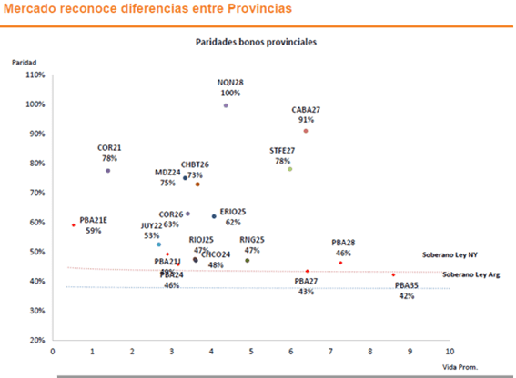
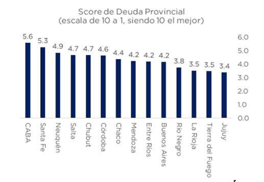
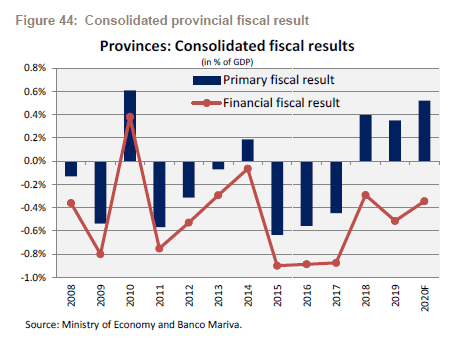
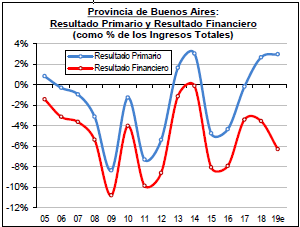
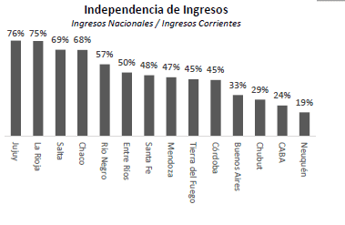
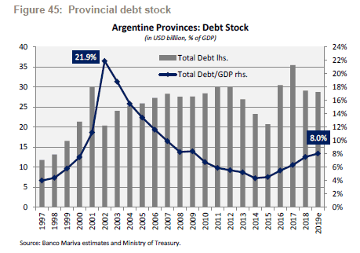
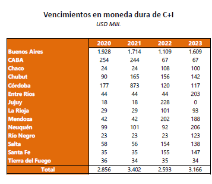
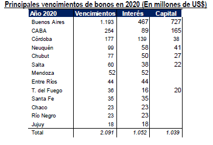

La medida de postergación de pagos llevada a cabo por el Gobernador de la Provincia de Buenos Aires (PBA), Axel Kicillof encendió las alarmas para el resto de la deuda sub-soberana.
Las calidades crediticias de las distintas provincias no son homogéneas sino que más bien, el mercado asigna variados riesgos para los distintos distritos. Si bien resulta importante determinar el futuro de las deudas provinciales, el tamaño de las mismas sobre el PBI es del 8% y dista de ser lo que fue en 2002, cuando llegó a ser un 22%. A su vez, los créditos de CABA, Neuquén, Córdoba y Santa Fé son, según lo que descuenta el mercado, los de mejor calidad crediticia.
Esta semana, el gobernador de la Provincia de Buenos Aires, Axel Kicillof, solicitó el consentimiento de los tenedores de la especie BP21 para postergar hasta mayo la amortización del título correspondiente a este mes. También Chubut pretende extender el plazo de bono que vence en 2026. Esta situación hace que los análisis sobre la deuda provincial tomen mayor preponderancia.
Paridades de los bonos
Actualmente las paridades de los bonos provinciales cotizan, en su gran mayoría, con mejores niveles respecto de lo que cotizan los bonos soberanos. De hecho, existen provincias en las que sus bonos cotizan a la par, o cerca de ellas. Entre los bonos que cotizan con niveles de paridad más elevados y en los que se le asignan menores riesgos de que ocurra un evento crediticio se destacan los bonos de Neuquén 2020 y CABA 2027 que operan con paridades de 100% y 97% respectivamente. Los bonos de Neuquén opera con tal nivel de paridad gracias a las regalías petroleras que ofrece la provincia mientras que los créditos de la Ciudad de Buenos Aires son considerados por el mercado como el mejor crédito sub-soberano.
A su vez, dentro del grupo de provincias que cotizan dentro del pelotón que el mercado considera como de mejor crédito se encuentran Córdoba y Santa Fe, las cuales muestran paridades en sus bonos a 2021 y 2027 respectivamente de 78%. Mendoza y Chubut operan con paridades de 75% y 73% para sus bonos a 2024 y 2026.
Por otro lado, en cuanto a los bonos que operan con un deterioro más importante se encuentran los de Provincia de Buenos Aires, los cuales registran en el tramo más corto de la curva, así como en el más corto, paridades de entre 42% y 46%, más en línea con lo que opera la renta fija soberana.

Ranking de deuda provincial
A la hora de identificar los mejores créditos provinciales más allá de la paridad con la que operan los bonos, existe cierto consenso en el mercado de cuales son los distritos más solidos en base a sus fundamentos. Un buen resumen de dicho consenso fue expuesto por los analistas de Consultatio, quienes presentaron el ranking crediticio provincial del primer trimestre de 2020 en base a los últimos datos disponibles de las cuentas provinciales.
En ese ranking, el podio lo sigue encabezando CABA, Santa Fe y Neuquen, las cuales se mantiene igual respecto del ranking del último trimestre de 2019. En el informe señalan que Córdoba cayó dos puestos mientras que PBA empeoró su calidad crediticia, cayendo al puesto 10 en el ranking. Dentro de las provincias con menor calidad crediticia destacan que Chaco mejoró su posición, pasando del puesto 10 al 7.

“Durante el último mes, en el universo de bonos provinciales hubo factores importantes a tener en cuenta. Por un lado resaltamos que la Nación aumentó impuestos sin reasignar (todavía) recursos. Además, la suspensión del pacto fiscal puso un freno a la baja de impuestos provinciales mientras que algunas provincias anunciaron planes de saneamiento fiscal tras las elecciones (Chaco, Santa Fe, por ejemplo). Por otro lado, mientras PBA está discutiendo una renegociación de la deuda, hay señales de que la Nación no asistirá financieramente a ninguna jurisdicción”, comentaron los analistas de Consultatio Investment.
Actualidad fiscal de las provincias
Yendo hacia el análisis fiscal y, a pesar de la crisis económica en Argentina, las provincias argentinas en su conjunto están cerca del equilibrio fiscal, mejorando sensiblemente en los últimos años y, sobretodo cuando se debe hacer una comparación en otros momentos de crisis económica argentina.

El economista Fernando Marull señaló en un informe enviado a sus clientes que "los últimos años, la situación fiscal de las provincias ha mejorado apreciablemente".“La mayoría de los distritos ostenta un equilibrio primario antes del pago de intereses. La PBA puede servir de ejemplo en este sentido: durante la gestión de María Eugenia Vidal, el resultado primario pasó de un déficit cercano a 4,7% de los ingresos totales a un superávit de 2,7% de esta misma medida en 2018 (último dato disponible). El déficit financiero, por su parte, se redujo de poco más de 8% de los ingresos en 2015 a un estimado de 6% en 2019”, explicó.

Independencia en sus ingresos
Dentro del análisis, resulta interesante determinar cuáles son las provincias que dependen mayormente de la coparticipación nacional y cuáles son los más independientes. En esa línea, Neuquén y Ciudad de Buenos Aires son las dos provincias que muestran el mejor ratio de ingresos nacionales sobre ingresos corrientes totales. En el otro extremo, Jujuy, La Rioja, Salta y Chaco son las cuatro provincias que más dependen de las transferencias nacionales ya que los ingresos nacionales representan el 76%, 75%, 69% y 68% de sus ingresos corrientes. De esta manera, la autonomía de estas cuatro últimas provincias resulta mucho más restringida respecto de Neuquén o Ciudad de Buenos Aires.

Tamaño de la deuda provincial
Por otro lado, al analizar el tamaño de la deuda provincial, se observa que si bien la misma subió sustancialmente en los últimos años, aún se mantiene debajo de los máximos alcanzados en el año 2002.“El stock de deuda provincial creció hasta el 8,0% del PIB en 2019 en comparación con el 4,5% en 2015. Dicho esto, el stock de deuda todavía está en niveles mucho más bajos que el pico alcanzado en 2002 después del estallido de la crisis de 2001, cuando El stock de deuda provincial creció hasta el 21,9% del PIB”, explicó el analista de Banco Mariva.

Los próximos vencimientos
Yendo hacia los próximos vencimientos en dólares, vemos que la Provincia de Buenos Aires es la que mayores vencimientos de bonos de capital más intereses tiene para este 2020 y hacia 2023. Concretamente, el total de las provincias enfrenta vencimientos en moneda dura de capital más intereses por un total de uSs 2856 millones, dentro de los cuales el 68% de ese total le corresponden a PBA con un total de u$s 1928 millones en 2020. Ciudad de Buenos Aires es el segundo distrito que mayores vencimientos en dólares enfrenta entre las provincias en este 2020 con un total de uSs 254 millones, representando un 13% del total. En tercer lugar aparece Córdoba con u$s 177 millones, o un 9% del total de la deuda provincial.
Si se analiza los vencimientos de capital e intereses de las provincias hasta 2023, en 2020 vence menos de un cuarto de ese total, es decir, un 23,7%. En 2021 y en 2023 es cuando mayores cargas de deuda hay con un total de uSs 3402 millones y u$s 3166 millones, sobre un total de los próximos cuatro años de u$s 12.019 millones.

El economista Fernando Marull destacó que, al igual que como sucede con Nación, la mejora en las finanzas públicas de las Provincias no resulta suficiente para afrontar los elevados vencimientos de deuda de 2020.
“Los distritos enfrentan actualmente un problema de liquidez. El caso de la PBA luce como el más apremiante ya que los pagos sólo de bonos en 2020 son unos U$S 1200 millones, monto que no podría enfrentar ni con la caja que le dejó Vidal ni con el impuestazo que acaba de aplicar Kicillof (cerca de US$400 millones). Por este motivo, PBA va a reestructurar su deuda”, comentó el economista. Por otro lado, en el informe provisto por Marull remarca que el resto de los distritos que deberán afrontar vencimientos importantes en 2020 aunque deberán separarse de acuerdo con su actual financiera y “tamaño”.
“En esa separación encontramos, por un lado, a CABA, Córdoba y Santa Fe o Mendoza, que si bien enfrentarán vencimientos desafiantes cuentan con acceso a los mercados local o internacional y, por lo tanto, no deberían tener mayores inconvenientes para rollear buena parte de los servicios. En cambio, provincias como Chubut, Entre Ríos, Jujuy o Chaco que deberán afrontar vencimientos sin acceso al crédito voluntario, lucen en una situación más comprometida”, dijo el economista.

Fuente: El Cronista